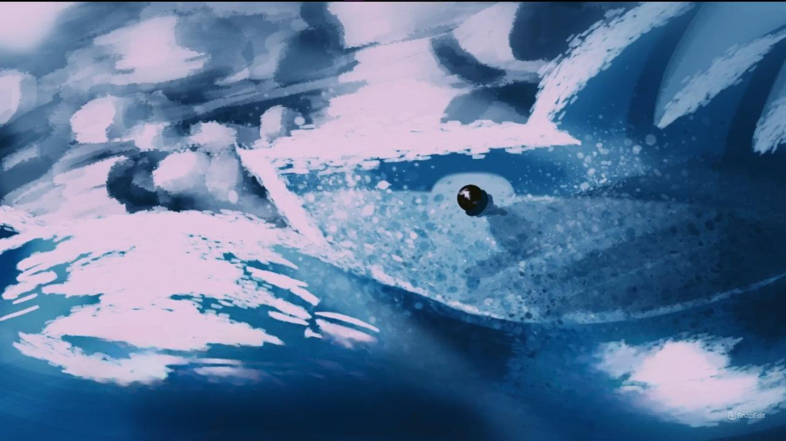

Logo
Home
Login
Cadastro
Sobre min

Que tal se desafiar com um quiz sobre essa especie tão bonita e unica
Quiz do tubarao
Alimentação
Ele come por sucção,de fitoplâncton
macro-algas,plâncton,
krill e pequenos
peixes e invertebrados
engolidos inteiros.
Saiba Mais
regioes
cores
historia